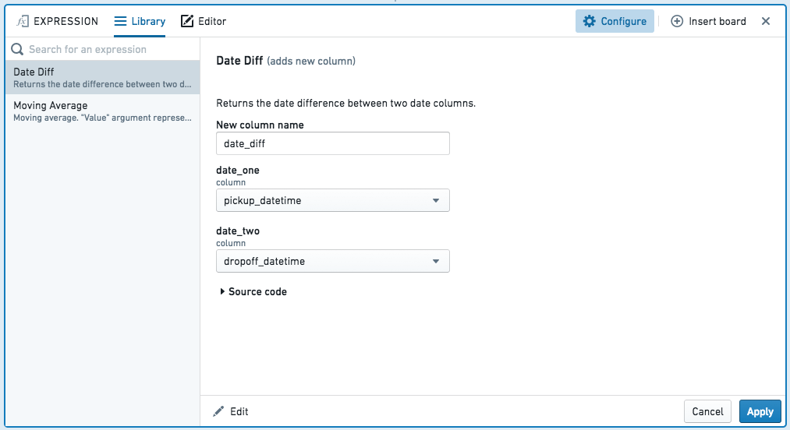
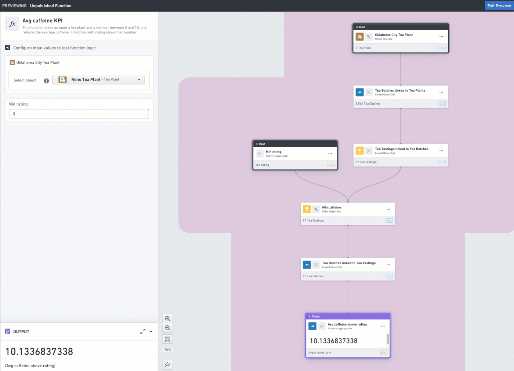
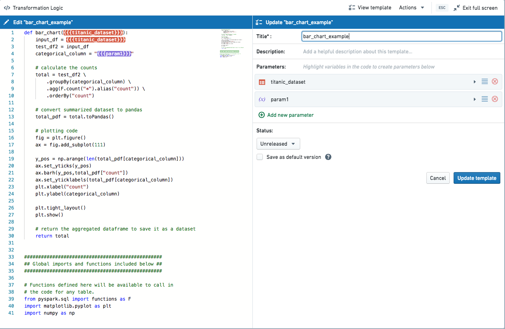

In analytical applications, you can choose to save pieces of logic for reuse by other users. This can be helpful to limit duplicative work, reduce time-to-value, and to allow users to leverage logic created by domain experts or more technical collaborators.
In Contour, you can save expressions to easily reuse logic across analyses and paths, as well as share logic with others. Saved expressions can be used to create or replace columns or to perform aggregates. Learn more about Contour.

A visual function in Quiver consists of one or more Quiver cards that load, combine, and transform data. Visual functions automatically apply a set of logical steps to data inputs within a Quiver analysis, and can be used by others in their analyses. Learn more about Quiver.

By abstracting code away behind a simple form-based interface, Code Workbook templates provide a lightweight way for highly technical users to collaborate with users who may be less comfortable writing code. Values selected by users are substituted into a template, which can then be run like any other transform in the workbook. Any transform that can be created with code, such as Matplotlib or Plotly visualizations, can be built with code templates. Learn more about Code Workbook.
